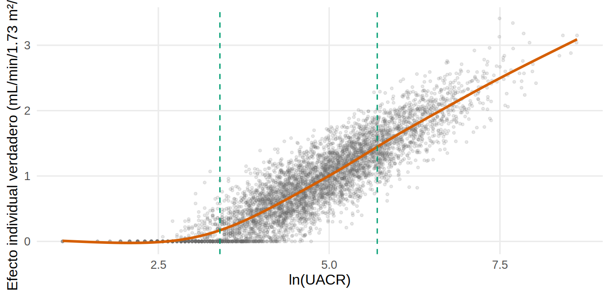
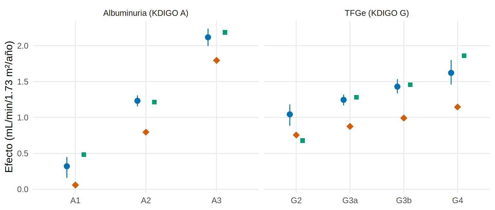
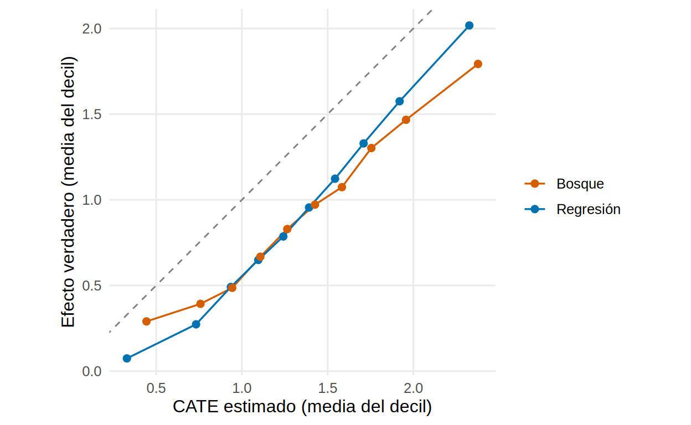

library(tidyverse)
library(ranger)
library(patchwork)
source("R/funciones_epi.R") # categoria_a(), categoria_g()
source("R/funciones_extra_a.R") # num(), pct()
source("R/funciones_extra_cap1213.R") # cargar_oraculo(), observado(), confusores_medidos
source("R/funciones_cap19_cuasi.R") # t_learner(), efecto_g_grupo(), efecto_ipw_grupo(), boot_vec(), calibracion_deciles()
theme_set(theme_minimal(base_size = 12) + theme(panel.grid.minor = element_blank()))
oraculo <- cargar_oraculo() # incluye la verdad (ite) y la fragilidad
d <- observado(oraculo) |> # lo que vería un investigador
mutate(ite = oraculo$ite, edad10 = edad / 10,
cat_a = categoria_a(uacr), cat_g = droplevels(categoria_g(tfg_basal)))
covs <- c("edad10", "sexo", "hba1c", "pas", "tfg_basal", "luacr", "ecv") # confusores MEDIDOS
f_out <- as.formula(paste("pendiente_tfg ~ isglt2 * (", confusores_medidos, ")")) # modelo del desenlace
f_ps <- as.formula(paste("isglt2 ~", confusores_medidos)) # modelo del tratamiento
ate <- mean(d$ite)Heterogeneidad del efecto: ¿a quién beneficia más?
Nota🩺 Escenario
El servicio solo puede iniciar iSGLT2 a una parte de los pacientes elegibles este trimestre. La jefa no pregunta si el fármaco funciona en promedio, sino ¿a quién trato primero? Tienes la intuición de que ayuda más a quien tiene más albuminuria, pero quieres ir más allá: ¿cuánto más?, ¿se puede construir una “puntuación de beneficio” para cada paciente?, ¿y cómo evitar creerte un hallazgo que es solo ruido? En el Cap. 8.4 vimos la interacción y los subgrupos con un modelo; aquí damos el salto a estimar el efecto condicional de forma causal y flexible.
Lo que vamos a hacer
- Distinguir el efecto individual, el efecto condicional (CATE) y el promedio (ATE).
- Estimar el efecto por subgrupo (KDIGO A y G) con fórmula g e IPW, y compararlo con la verdad.
- Estimar un CATE para cada paciente con el método de dos aprendices (T-learner), con regresión y con bosques aleatorios, y calibrarlo por deciles contra el efecto verdadero.
- Ver cómo el sobreajuste fabrica heterogeneidad que no existe, y usar el CATE para priorizar.
Datos simulados (Bases/ckd_isglt2_oraculo.csv, los de los Cap. 3.2 y 12): conocemos el efecto individual ite de cada paciente, que crece con la albuminuria.
Paso 1. Tres efectos distintos
- Efecto individual (\(\delta_i = Y^1_i - Y^0_i\)): lo que el fármaco hace a este paciente. No se observa nunca.
- ATE: el promedio de todos (aquí 0.93 mL/min/1.73 m²/año).
- CATE (efecto promedio condicional): el promedio entre pacientes con las mismas características \(X\), \(E[\delta \mid X = x]\). Es lo que sí se puede estimar y lo que sirve para decidir.
El efecto individual tiene una parte explicable por las covariables y otra que es “ruido individual” que ningún modelo recuperará. En la simulación sabemos cuánta hay: si predijéramos ite perfectamente con la albuminuria, la correlación máxima alcanzable sería
techo <- sqrt(summary(lm(ite ~ splines::ns(luacr, 5), data = oraculo))$r.squared) # R² del mejor modelo con UACR
round(techo, 2)[1] 0.9es decir, 0.90 (el “techo” de cualquier método). Lo dibujamos:
ggplot(oraculo, aes(luacr, ite)) +
geom_point(alpha = 0.15, size = 0.8, colour = "grey40") +
geom_smooth(method = "gam", formula = y ~ s(x), colour = "#D55E00", se = FALSE) +
geom_vline(xintercept = log(c(30, 300)), linetype = "dashed", colour = "#009E73") +
labs(x = "ln(UACR)", y = "Efecto individual verdadero (mL/min/1.73 m²/año)")
Paso 2. Efecto por subgrupo: fórmula g e IPW
Para el efecto dentro de un subgrupo (A1, A2, A3), se estima el efecto con todo el análisis de siempre y se promedia solo en ese subgrupo: con la fórmula g (Cap. 12.6), predecir a los del subgrupo con y sin fármaco y promediar; con IPW, ponderar y comparar dentro del subgrupo. Los intervalos salen de un bootstrap de 200 réplicas.
tabla_subgrupo <- function(var) {
v <- d |> group_by(.data[[var]]) |> summarise(n = n(), verdad = mean(ite)) |> rename(grupo = 1) |> mutate(grupo = as.character(grupo))
g <- boot_vec(d, \(x) efecto_g_grupo(x, var, f_out), B = 200, semilla = 1) |> rename(g = estimado, g_inf = inf, g_sup = sup)
ipw <- boot_vec(d, \(x) efecto_ipw_grupo(x, var, f_ps), B = 200, semilla = 1) |> rename(ipw = estimado, ipw_inf = inf, ipw_sup = sup)
v |> left_join(g, by = "grupo") |> left_join(ipw, by = "grupo") |> mutate(variable = var)
}
sub_a <- tabla_subgrupo("cat_a")
sub_a |> select(grupo, n, verdad, g, g_inf, g_sup, ipw, ipw_inf, ipw_sup) |> mutate(across(where(is.numeric) & !n, \(v) round(v, 2)))# A tibble: 3 × 9
grupo n verdad g g_inf g_sup ipw ipw_inf ipw_sup
<chr> <int> <dbl> <dbl> <dbl> <dbl> <dbl> <dbl> <dbl>
1 A1 465 0.06 0.32 0.16 0.45 0.48 0.18 0.84
2 A2 3536 0.8 1.23 1.16 1.31 1.22 1.12 1.3
3 A3 999 1.8 2.12 2 2.24 2.19 1.97 2.4 Qué vemos: el gradiente se recupera: verdad 0.06 (A1), 0.80 (A2) y 1.80 (A3); fórmula g 0.32, 1.23 y 2.12. La diferencia A3 − A1 es 1.80 con g y 1.70 con IPW, frente a 1.74 verdadera. Pero los niveles están desplazados hacia arriba (0.34 de media): es la fragilidad no medida del Cap. 12, que infla el beneficio en todos los subgrupos. El grupo A1 tiene pocos pacientes (n = 465) y el IC del IPW lo refleja. Ojo: los IC bootstrap solo recogen el azar muestral, no el sesgo; por eso en 3 de los 3 subgrupos (A1, A2 y A3) el IC de la fórmula g queda por encima de la verdad: precisión sin validez.
Ahora por categoría de TFGe (G2, G3a, G3b, G4):
sub_g <- tabla_subgrupo("cat_g")
sub_g |> select(grupo, n, verdad, g, g_inf, g_sup, ipw) |> mutate(across(where(is.numeric) & !n, \(v) round(v, 2)))# A tibble: 4 × 7
grupo n verdad g g_inf g_sup ipw
<chr> <int> <dbl> <dbl> <dbl> <dbl> <dbl>
1 G2 343 0.76 1.04 0.89 1.18 0.68
2 G3a 2375 0.88 1.25 1.17 1.32 1.28
3 G3b 2062 0.99 1.43 1.34 1.53 1.46
4 G4 220 1.15 1.62 1.46 1.8 1.86dentro_a2 <- oraculo |> mutate(cat_a = categoria_a(uacr), cat_g = categoria_g(tfg_basal)) |>
filter(cat_a == "A2") |> group_by(cat_g) |> summarise(verdad = mean(ite))Qué vemos: el efecto parece crecer al bajar la TFGe (verdad de 0.76 en G2 a 1.15 en G4). Pero la TFGe no es la que modifica el efecto: es la albuminuria, que en estos datos es algo mayor cuando la TFGe es menor. Dentro del estrato A2, el efecto verdadero apenas cambia entre categorías G (de 0.71 a 0.87). Una variable puede parecer modificadora solo por arrastrar a la que de verdad lo es.
bind_rows(sub_a, sub_g) |>
mutate(variable = recode(variable, cat_a = "Albuminuria (KDIGO A)", cat_g = "TFGe (KDIGO G)")) |>
ggplot(aes(grupo)) +
geom_pointrange(aes(y = g, ymin = g_inf, ymax = g_sup), colour = "#0072B2", position = position_nudge(x = -0.12)) +
geom_point(aes(y = ipw), shape = 15, size = 2.2, colour = "#009E73", position = position_nudge(x = 0.12)) +
geom_point(aes(y = verdad), shape = 18, size = 3.5, colour = "#D55E00") +
facet_wrap(~variable, scales = "free_x") + labs(x = NULL, y = "Efecto (mL/min/1.73 m²/año)")
Paso 3. Un CATE para cada paciente: el método de dos aprendices
Los subgrupos usan categorías que tú eliges. El método de dos aprendices (T-learner) deja que los datos digan cómo varía el efecto: (1) ajustar un modelo del desenlace solo en los tratados, \(\hat\mu_1(x)\); (2) otro solo en los no tratados, \(\hat\mu_0(x)\); (3) para cada paciente, el efecto estimado es \(\hat\tau(x) = \hat\mu_1(x) - \hat\mu_0(x)\). Usamos t_learner() con ajuste cruzado en 5 pliegues (Cap. 12.11): cada paciente se predice con modelos que no lo vieron. Probamos regresión lineal y bosque aleatorio (ranger):
d$cate_lm <- t_learner(d, "pendiente_tfg", "isglt2", covs, modelo = "lm")
d$cate_rf <- t_learner(d, "pendiente_tfg", "isglt2", covs, modelo = "ranger")
resumen_cate <- map_dfr(c(`Regresión` = "cate_lm", `Bosque` = "cate_rf"), \(v)
tibble(media = mean(d[[v]]), sd = sd(d[[v]]), correlacion = cor(d[[v]], d$ite)), .id = "modelo")
resumen_cate |> mutate(across(where(is.numeric), \(v) round(v, 2)))# A tibble: 2 × 4
modelo media sd correlacion
<chr> <dbl> <dbl> <dbl>
1 Regresión 1.32 0.57 0.88
2 Bosque 1.36 0.56 0.72Qué vemos: el efecto individual verdadero tiene media 0.93 y desviación 0.65. La regresión capta la heterogeneidad casi hasta el techo (correlación 0.88 frente a 0.90); el bosque se queda en 0.72. Aquí el efecto depende de una sola variable y de forma suave, justo el escenario donde la regresión gana: el bosque, más flexible, pierde precisión por ruido. Ambas medias (1.32 y 1.36) superan el ATE verdadero (0.93): otra vez la fragilidad.
Calibración por deciles
La calibración responde a: “si agrupo a los pacientes en 10 grupos según su CATE estimado, ¿el efecto verdadero de cada grupo coincide con el estimado?”. Ordenamos y comparamos medias:
cal <- bind_rows(calibracion_deciles(d$cate_lm, d$ite) |> mutate(modelo = "Regresión"),
calibracion_deciles(d$cate_rf, d$ite) |> mutate(modelo = "Bosque"))
pend_cal <- cal |> group_by(modelo) |> summarise(pendiente = coef(lm(verdadero ~ estimado))[[2]], desplazamiento = mean(estimado - verdadero))
cal |> filter(decil %in% c(1, 5, 10)) |> mutate(across(where(is.numeric), \(v) round(v, 2))) |> arrange(modelo, decil)# A tibble: 6 × 4
decil estimado verdadero modelo
<dbl> <dbl> <dbl> <chr>
1 1 0.44 0.29 Bosque
2 5 1.26 0.83 Bosque
3 10 2.38 1.79 Bosque
4 1 0.33 0.07 Regresión
5 5 1.24 0.79 Regresión
6 10 2.33 2.02 Regresiónggplot(cal, aes(estimado, verdadero, colour = modelo)) +
geom_abline(colour = "grey50", linetype = "dashed") +
geom_line(linewidth = 0.6) + geom_point(size = 2) +
scale_colour_manual(values = c(Regresión = "#0072B2", Bosque = "#D55E00")) +
coord_equal() + labs(x = "CATE estimado (media del decil)", y = "Efecto verdadero (media del decil)", colour = NULL)
Qué vemos: ambas curvas quedan por debajo de la diagonal (el efecto estimado supera al verdadero en 0.40 con regresión y en 0.43 con bosque, de media): es el desplazamiento por confusión no medida. Pero ordenan bien: la regresión tiene una pendiente de 1.02 (1 = calibración perfecta en pendiente) y el bosque de 0.84: este exagera la dispersión (sus deciles extremos están más lejos del centro de lo que está el efecto verdadero). Si incluimos la fragilidad (solo posible en simulación), el desplazamiento desaparece:
dd <- mutate(d, fragilidad = oraculo$fragilidad)
cate_frag <- t_learner(dd, "pendiente_tfg", "isglt2", c(covs, "fragilidad"), modelo = "lm")
round(c(media_estimada = mean(cate_frag), ATE_verdadero = ate, correlacion = cor(cate_frag, d$ite)), 2)media_estimada ATE_verdadero correlacion
0.92 0.93 0.89 Con la fragilidad medida, la media estimada es 0.92 (verdad 0.93). Es decir: el CATE es tan válido como lo sea la identificación del efecto; modelar bien la heterogeneidad no arregla la confusión.
Paso 4. Heterogeneidad que no existe
Los métodos flexibles encuentran patrones donde no los hay. Para verlo, quitamos el efecto del fármaco de los datos: damos a todos su resultado sin tratamiento (pendiente_0), de modo que el efecto verdadero es cero para todos y no hay heterogeneidad. Repetimos el T-learner:
nulo <- mutate(d, pendiente_tfg = oraculo$pendiente_0) # mundo sin efecto: el fármaco no hace nada
nulo_lm <- t_learner(nulo, "pendiente_tfg", "isglt2", covs, modelo = "lm")
nulo_rf <- t_learner(nulo, "pendiente_tfg", "isglt2", covs, modelo = "ranger")
tibble(modelo = c("Regresión", "Bosque"), media = c(mean(nulo_lm), mean(nulo_rf)), sd = c(sd(nulo_lm), sd(nulo_rf)),
p10 = c(quantile(nulo_lm, 0.1), quantile(nulo_rf, 0.1)), p90 = c(quantile(nulo_lm, 0.9), quantile(nulo_rf, 0.9))) |>
mutate(across(where(is.numeric), \(v) round(v, 2)))# A tibble: 2 × 5
modelo media sd p10 p90
<chr> <dbl> <dbl> <dbl> <dbl>
1 Regresión 0.39 0.08 0.3 0.48
2 Bosque 0.4 0.33 -0.03 0.81Qué vemos: la media sale 0.39 (otra vez la fragilidad, que hace parecer efecto lo que es pronóstico), pero lo importante es la dispersión. En un mundo donde nadie se beneficia de forma distinta, la regresión dibuja un efecto casi constante (DE 0.08), mientras el bosque “descubre” pacientes con un efecto de -0.03 y otros de 0.81 (DE 0.33). Esa heterogeneidad es ruido que el modelo toma por señal.
Advertencia⚠️ Cómo no engañarte con la heterogeneidad
El Cap. 8.4 resume los errores clásicos de los subgrupos; recuerda los tres que más duelen. (1) Muchos subgrupos, algún hallazgo: si miras 20, uno saldrá “significativo” por azar. Define los pocos subgrupos antes de mirar los resultados y comprueba la interacción, no el valor p de cada subgrupo. (2) Un modelo flexible no es un modelo verdadero: compara siempre con uno simple, usa ajuste cruzado y evalúa la calibración en datos nuevos. (3) El CATE hereda los sesgos del ATE: si la confusión no medida infla el efecto promedio, también infla el efecto de cada subgrupo. Un hallazgo de heterogeneidad es una hipótesis que merece replicarse, no una conclusión.
Paso 5. ¿A quién trato primero?
Volvamos a la pregunta de la jefa: solo hay fármaco para el 30 % de los pacientes. Comparamos cinco reglas de priorización por el efecto verdadero medio de los elegidos (solo calculable aquí): al azar, por albuminuria (de mayor a menor), con el CATE de la regresión, con el del bosque, y la regla imposible de elegir a los de mayor efecto verdadero.
k <- round(0.30 * nrow(d))
top <- \(puntaje) mean(d$ite[order(puntaje, decreasing = TRUE)[seq_len(k)]]) # efecto verdadero medio de los k elegidos
prioridad <- tibble(regla = c("Al azar", "Por UACR (ln UACR)", "T-learner con regresión", "T-learner con bosque", "Oráculo (efecto verdadero)"),
efecto_medio = c(ate, top(d$luacr), top(d$cate_lm), top(d$cate_rf), top(d$ite)))
prioridad |> mutate(efecto_medio = round(efecto_medio, 2))# A tibble: 5 × 2
regla efecto_medio
<chr> <dbl>
1 Al azar 0.93
2 Por UACR (ln UACR) 1.65
3 T-learner con regresión 1.64
4 T-learner con bosque 1.52
5 Oráculo (efecto verdadero) 1.72Qué vemos: tratar a un 30 % elegido al azar da en promedio 0.93; elegirlo por albuminuria sube a 1.65; el CATE de la regresión da 1.64 y el del bosque 1.52, frente al máximo teórico de 1.72. Priorizar por un criterio clínico simple (la albuminuria) ya consigue casi todo lo alcanzable; el aprendizaje automático añade poco aquí porque la heterogeneidad tiene un solo motor. Con muchas covariables que interactúan, sería otra historia.
Con el paquete grf (bosques causales, de Athey y Wager), que estima el CATE con intervalos y una prueba de calibración (código no verificado en el entorno de pruebas del libro):
# Con el paquete grf (código no verificado en el entorno de pruebas del libro)
library(grf)
X <- model.matrix(~ edad10 + sexo + hba1c + pas + tfg_basal + luacr + ecv, data = d)[, -1]
cf <- causal_forest(X, Y = d$pendiente_tfg, W = d$isglt2, num.trees = 2000, seed = 1)
cate_grf <- predict(cf)$predictions # CATE de cada paciente (predicción fuera de bolsa)
average_treatment_effect(cf, target.sample = "all") # ATE con error estándar
test_calibration(cf) # ¿hay heterogeneidad real? (coeficientes "mean" y "differential")
best_linear_projection(cf, X[, "luacr"]) # ¿cuánto cambia el efecto con ln(UACR)?
cor(cate_grf, d$ite) # solo posible con datos simulados
Importante🎯 En resumen
- El CATE (efecto condicional) es lo que sirve para decidir a quién tratar; el efecto individual no se observa nunca.
- Por subgrupo, la fórmula g y el IPW recuperan el gradiente con la albuminuria (A3 − A1 = 1.80 frente a 1.74 verdadero), pero con los niveles inflados (0.34) por la fragilidad no medida.
- Una variable puede parecer modificadora solo por correlacionar con la que sí lo es (TFGe y albuminuria).
- El T-learner estima un CATE por paciente: con regresión, correlación 0.88 con el efecto verdadero (techo 0.90); con bosque, 0.72 y una dispersión exagerada. Calibra siempre por deciles.
- Sin ningún efecto verdadero, el bosque inventa una dispersión de 0.33: cuidado con los falsos hallazgos. Y priorizar por albuminuria casi iguala al CATE complejo.
Ejercicio
- En el Paso 5, cambia el 30 % por el 10 % y por el 60 %. ¿Cómo cambia la ventaja de priorizar frente a tratar al azar? ¿Qué pasa cuando tratas a casi todos?
- En el Paso 3, prueba
t_learner(..., modelo = "ranger")con otrassemillay compara la correlación con el efecto verdadero. ¿Cuánto varía? - Define tú tres subgrupos plausibles antes de mirar (p. ej., edad ≥ 70, ECV, HbA1c ≥ 9) y calcula el efecto por fórmula g con
efecto_g_grupo(). ¿Alguno difiere del resto? ¿Qué te diría el Cap. 8.4 sobre cómo interpretarlo?
Referencias
- Künzel SR, Sekhon JS, Bickel PJ, Yu B. Metalearners for estimating heterogeneous treatment effects using machine learning. Proc Natl Acad Sci USA. 2019;116(10):4156-4165.
- Wager S, Athey S. Estimation and inference of heterogeneous treatment effects using random forests. J Am Stat Assoc. 2018;113(523):1228-1242.
- Knol MJ, VanderWeele TJ. Recommendations for presenting analyses of effect modification and interaction. Int J Epidemiol. 2012;41(2):514-520.
- Hernán MA, Robins JM. Causal Inference: What If. Chapman & Hall/CRC; 2020 (cap. 4: modificación del efecto).
- Barrett M, D’Agostino McGowan L, Gerke T. Causal Inference in R. https://www.r-causal.org/ (lectura recomendada por el autor).